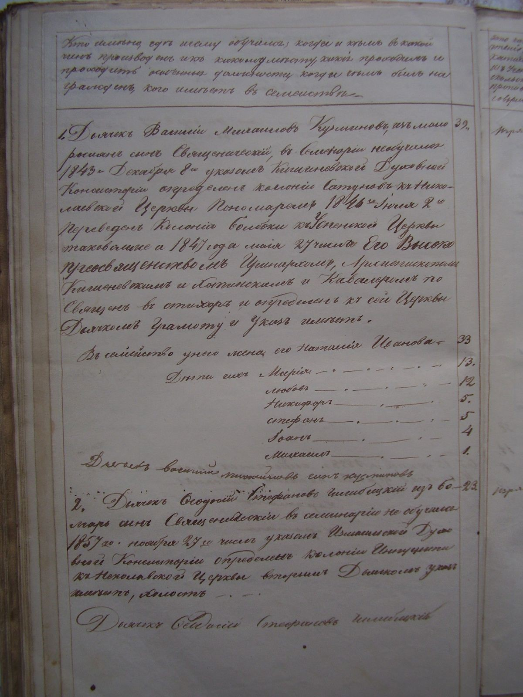

Родилась: 1844
Умерла: 26.10.1913, с. Зеленое (с. Зеленовка)
Продолжительность жизни: 69
Место жительства: с. Зеленое (с. Зеленовка)
Основное занятие: колонистка - земледелец
запись о смерти (оп.3, д.908, л.326 об.) -№ 18
Отец: Кузминов Василий Михайлов
Мать: Кузминова Наталия Иванова
Муж: Сербинов Тодор (Федор) Тошев (Федоров)
Дочь: Стойловская (Сербинова) Наталья Федоровна
Сын: Сербинов Иван Федоров
Дочь: Сербинова Марина Федоровна
Дочь: Сербинова Ирина Федоровна
Дочь: Маврова (Сербинова) Доминикия Федоровна
Сын: Сербинов Степан Федорович
Дочь: Сербинова Анна Федоровна
 Ведомость о церкви: 1857, колония Импуцита (ныне с. Владычень). Николаевской одноклирной колонистского водворения Кагуло-прутского округа колонии Инпуцита. |